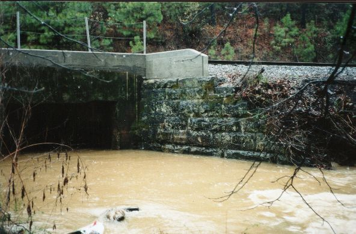

|  | Put in just below this, tunnel #9. You can clearly see the 5 1/2 blocks exposed. This level was basically perfect. |
| Brian McAnnally checks out one of numerous trains that headed up the hill. At one point the pusher engine engineer stopped to watch us from one of the bridges. | |
| Shane Hulsey at the bottom of Geisha, heading into tunnel 5. | |
| Shane and Brian just upstream of the old double arched bridge (#4). I don't know how long this railroad line has been there, but it's been a while for sure. |
| Shane drops into tunnel #2 | |
| Brian heads into tunnel #1, which had some unexpectedly turbulent water at it's entrance. Below here the main entree is served, see page 2. |